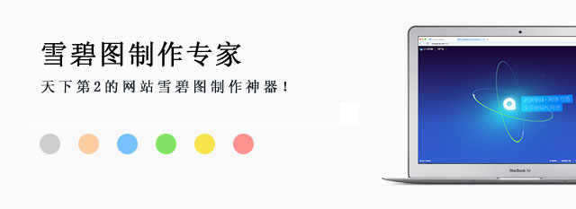
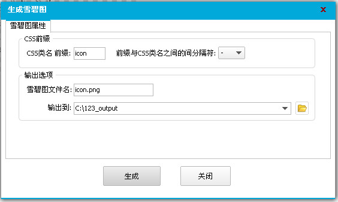

网页雪碧图制作专家是一款辅助网页开发、快速合成雪碧图的实用型工具软件。
它的界面非常简洁、操作方便、功能强大，可减轻广大Web程序员或网站网页设计爱好者制作雪碧图时的苦恼、愉快地享用CSS雪碧图网页开发技术。
网页雪碧图制作专家 使用方法
1、 下载软件并解压文件，双击"CssSpritesMaker.exe"运行软件；
2、新建设计稿；

3、添加素材；
4、保存设计稿;
5、生成雪碧图。

网页雪碧图制作专家 主要特性
1、绿色软件，无需安装；
2、安全无毒，使用放心；
3、可批量添加素材，可支持从资源管理器拖入素材；
4、灵活强大的排列和对齐功能；
5、自由托拽、灵活移动和改变大小；
6、一键生成雪碧图及CSS、HTML文件；
7、可生成三态按钮背景图、导航栏背景图，tab标签页背景图等；
8、方便的素材导出功能；
9、实用的查找功能；
10、支持设计稿的反复修改，轻松替换旧的素材(比如老板或客户不喜欢某个图标素材，要换成他们喜欢的，用本软件就对了)；
11、便携式设计稿文件(*.cssbg格式)，单个文件内嵌所有素材,如同photoshop的*.psd格式文件。